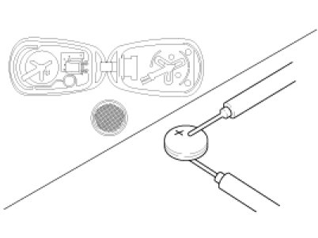
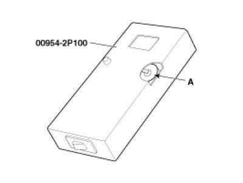
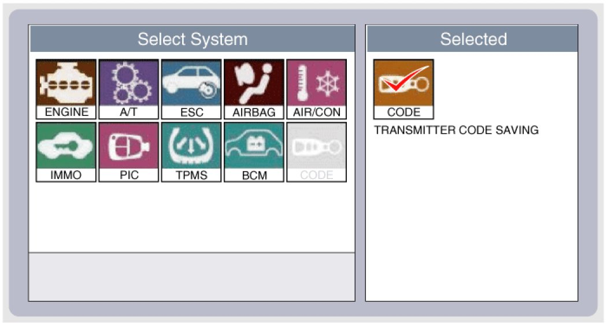
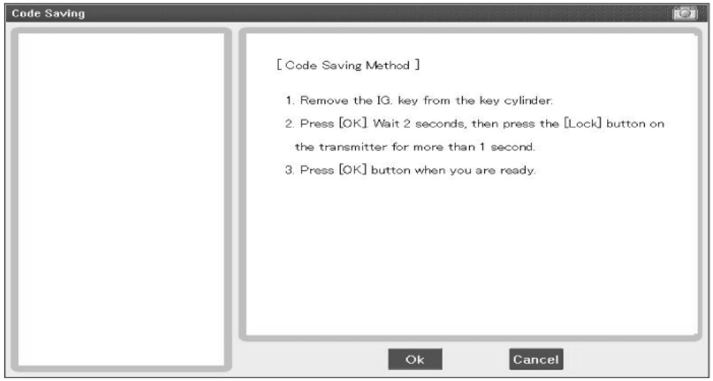
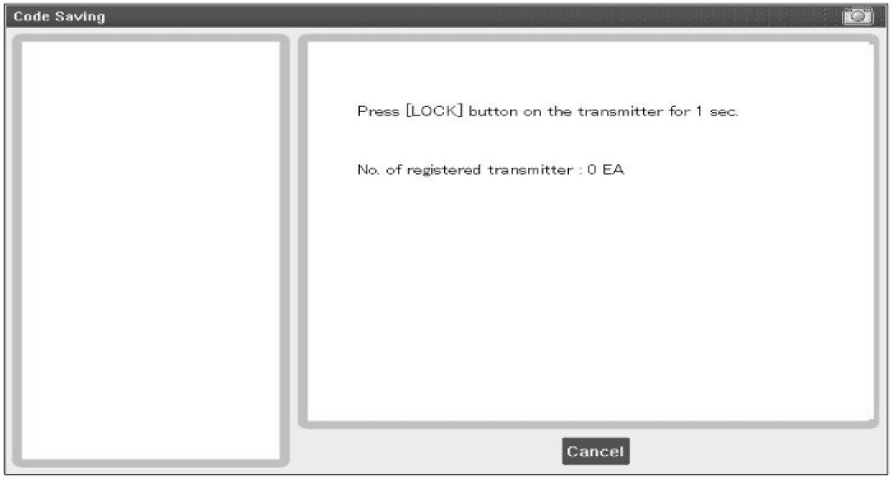
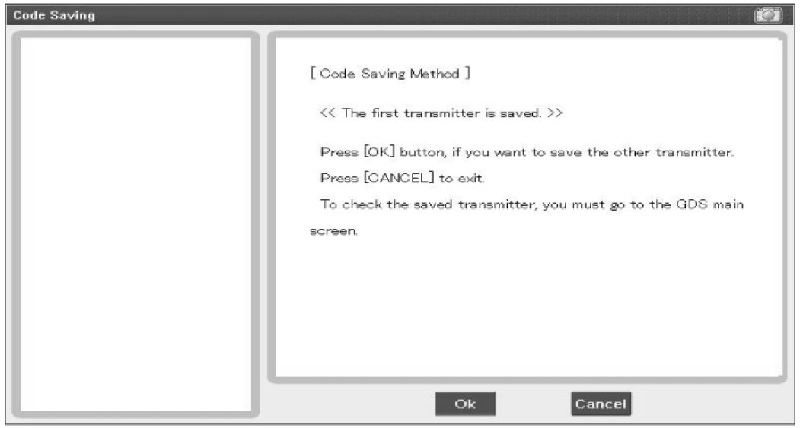
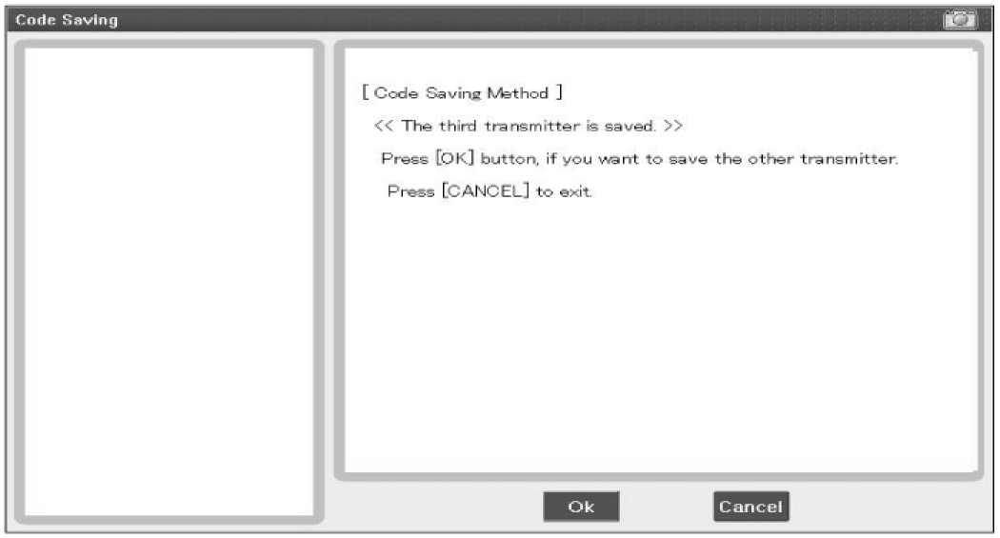
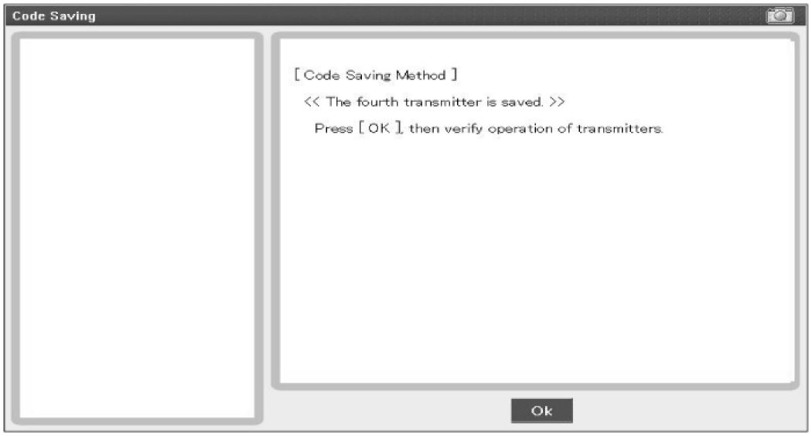

Keyless Entry Transmitter: Service and Repair
Inspection
1. Check that the red light flickers when the door lock or unlock button is pressed on the transmitter.
2. Remove the battery (A) and check voltage if the red light doesn't flicker.
Standard voltage :3V

3. Insert the battery (A) into the tester (09954-2P100).

4. Push the test button and If "0.00" is displayed on screen, it means that the battery voltage is 2V or less.
5. If "L" is displayed on screen, it means that the battery is low power and it needs to replace.
6. To prevent the discharge of electricity, turn the tester power off.
7. Replace the transmitter battery with a new one, if voltage is low power then try to lock and unlock the doors with the transmitter by pressing the lock or unlock button five or six times.
8. If the doors lock and unlock, the transmitter is O.K, but if the doors don't lock and unlock, register the transmitter code, then try to lock and unlock the doors.
9. If the doors lock and unlock, the transmitter is O.K, but if the doors don't lock and unlock, replace the transmitter.
WARNING:
An inappropriately disposed battery can be harmful to the environment and human health.
Dispose the battery according to your local law(s) or regulation.
Transmitter Code Registration (Using Code Saver)
1. Open Door.
2. Connect POWER (B+) and GND, signal line of Code Saver.
3. If connection is normal, signal line is activated and RED LED turns ON.
4. If switch of Code Saver turns ON, data via signal line will be transmitted.
5. BCM enters into Code Save mode when it receives data from Code Saver and send Code Save Start signal via signal line.
6. Code Saver turns Green LED ON when it receives Code Save Start signal.
7. When you press Lock or Unlock button of transmitter, BCM will save Codes.
8. If there are 2 transmitters for Code Saving, register by performing item 7).
9. If switch of Code Saver turns OFF or is disconnected, Code Saving mode will be finished.
Code saving method
Transmitter Code Registration (Using GDS)
1. Connect the DLC cable of GDS to the data link connector (16 pins) in driver side crash pad lower panel, turn the power on GDS.

2. Select the vehicle model and then do "CODE SAVING"

3. After selecting "CODE SAVING" menu, button "ENTER" key, then the screen will be shown as below.

4. After removing the ignition key from key cylinder, push "ENTER" key to proceed to the next mode for code saving. Follow steps 1 to 4 and then code saving is completed.



